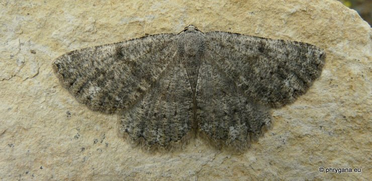

| PHRYGANA | Fauna | Flora |
additions nouveautés |
espèces species |
contact -
info - commentaires phrygana1 (at) gmail.com |
| diversité crétoise -- Cretan diversity | |||||
| Gnophos (Odontognophos) zacharia Staudinger 1879 |
| 263 | Fauna | GEOMETRIDAE | Ennominae | Gnophos Treitschke 1825 |
|
 Gnophos (Odontognophos) zacharia Agios Giorgos (Melambes) 13 avril 2011 |
| Couleur de fond gris, picotée d'écailles noires avec des reflets bleutés; bande tranversale médiane noire peu marquée; ligne postmédiane de points noirs | |
| Espèce univoltine? | |
| Période de vol: avril | |
| Statut en Crète: indigène endémique | |
| Biotopes en Crète: phrygana, olivaies, garrigue, lieux rocailleux | |
| Altitudes: 0 - 300 m | |
| Distribution: Crète | |
| Note: vient à la lumière. | |
|
|
| 18 septembre 2011 |
| © paul fontaine -- © Phrygana.eu 2007 -- 2013 |